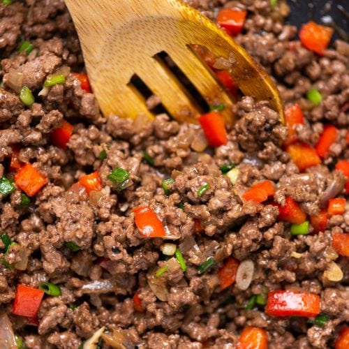

Bell pepper minced meat

Description
This dish is absolutely delicious and can be made in 15 minutes, so it is perfect for one of those busy day when you also crave a hearty and tasty dinner.
Other than being really tasty, fast and easy to make, it is a scalable dish, meaning you can make it as simple as you want or adding a few extras to make it extra special!
Ingredients
- 1 bell pepper
- Minced meat (Meat or pork or mix whichever you like)
- Salt
- Oil
- Pinch of salt
Optional:
- Onion (but highly recommended)
- Garlic
- Peas
- Carrots
Steps:
- Minced up the meat (Save your time by buying minced meat from your supermarket)
- Cut the vegetables
- Heat up your wok or cast iron skillet and add some oil
- Put in the onion and cook over low heat to slightly brown them, skip this step if you don't have onion
- Then add the garlic, optional
- Add the chopped bell peppers (and a bit of chilli if you fancy some spiciness) and cook for a couple of minutes
- Add the minced meat and cook over medium-high heat (Add a bit more oil if the beef stick to the bottom of the pan
- The meat cooks relatively quickly, once none of them are pink, add a pinch of salt and pepper
- Add a dash of soy sauce to give it color and flavor
- Continue stirring for a few minutes over high heat
And there you have it! A quick and easy dinner, best served over white rice!
Quick tip:The leftover oil and juice in the wok is very flavorful, fry an egg in it and serve together as an extra treat!